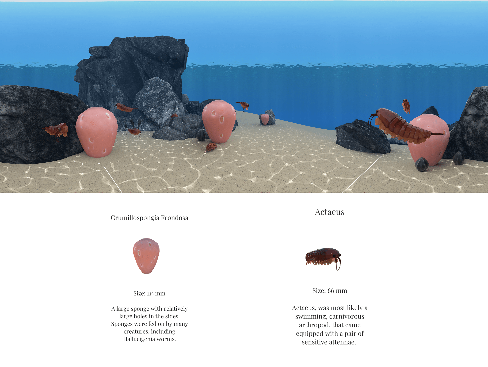
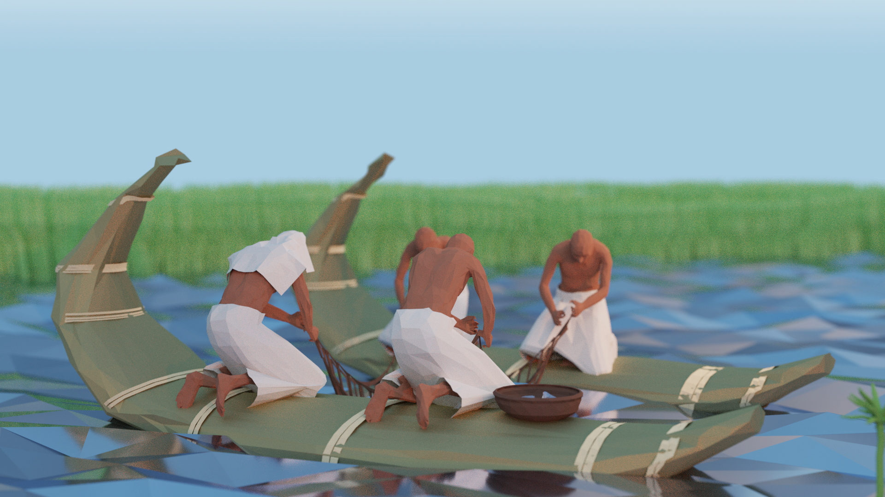
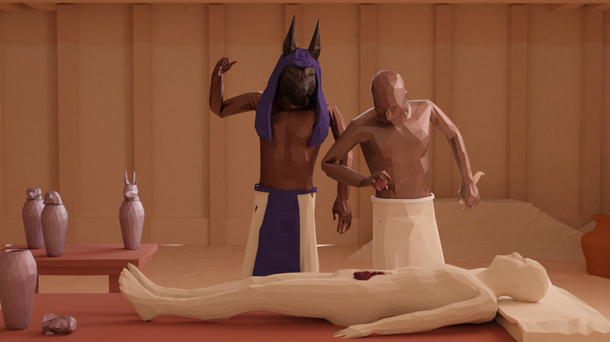
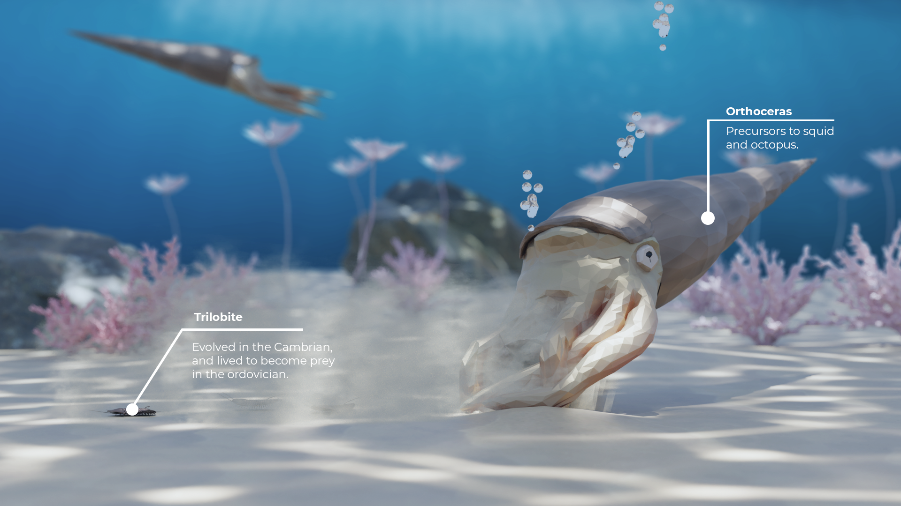

I've been floating this idea around my head for a while. The first time I saw low-poly artwork I immediately thought it could be used for scientific or historical visualization.
TLDR on lessons learned:
I focused my first release on a pretty obscure time period in history: the Cambrian Era, 450 Million Years ago. Looking back on this, my research process sucked, my art sucked, my marketing strategy sucked. But somehow I still managed to finish it and launch it on the app store. It did pretty well, netting about 1,000 downloads in eight months, with no paid advertisements and most downloads being driven by natural search on the app store. Link to the Cambrian App.
|  |
A couple months I started development on the next iteration of the app. I wanted to see if I could use low-poly to create immersive environments for human history, so I started digging into ancient egypt as a source for my next book.
|

|
|

|
I sped up my production process for this book, and released it on the app store a couple months after starting the modeling and rendering work. While I was much happier with the art, the app did not perform as well as I had initially thought it would. The egypt app did much worse the Cambrian, only netting about 100 units in four months. It turns out in non-niche subjects like Ancient Egypt people would prefer a 10 million dollar documentary to a 3 month amateur rendered low-poly storybook.
During quarantine, I've been working on the 3rd iteration. I've taken what I've learned from my past two launches and made some new hypotheses to test. I'm focusing on the e-book market this time around, and am exploring the creative affordances of 2D media mixed with lowpoly. I'm planning on making the book more narratively driven, drawing inspiration from successful series like DK Eyewitness Books and the Magic School Bus series. The launch is set for September.
|  |